01
Conselheiro empresarial
Um olhar externo. Uma direção mais clara.
Análise da realidade da empresa, reuniões diagnósticas e planejamento estratégico para apoiar decisões e organizar os próximos passos.
CRISTIAN FRANÇA & KELLY FRANÇA
Desenvolvemos quem lidera. Organizamos o que sustenta. Transformamos conhecimento em ação para o seu negócio.
PESSOAS✦GESTÃO✦LIDERANÇA✦AÇÃO✦EVOLUÇÃO
Gerir pessoas, projetos e equipes. Organizar empresas. Ensinar, orientar e fazer acontecer.
Há mais de 20 anos, nossa experiência passa pela gestão de pessoas, departamentos e equipes, conectando organização empresarial ao desenvolvimento de quem faz a empresa acontecer.
Acreditamos no potencial de cada profissional. Por isso, aliamos processos, liderança, comunicação e capacitação a uma atuação próxima, com foco na execução.
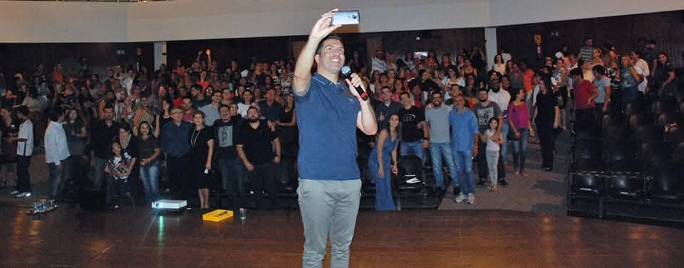
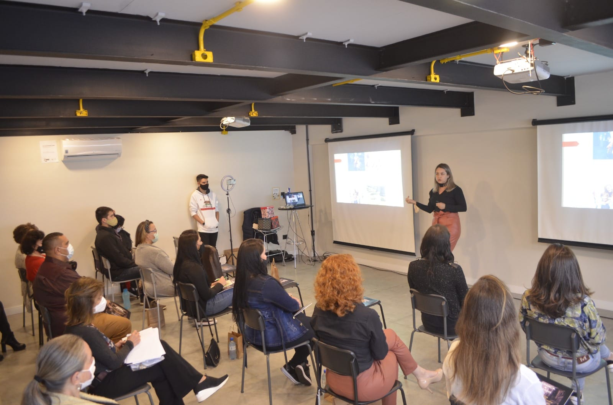
PALESTRAS · LIDERANÇA · DESENVOLVIMENTO
Conhecimento ganha valor quando encontra a realidade de quem ouve. Liderança, comunicação e desenvolvimento humano conectados ao dia a dia das empresas.
Explore nossa atuaçãoCada empresa tem seu momento. Nossa atuação une gestão e desenvolvimento humano para trabalhar os desafios que realmente importam.
Um olhar externo. Uma direção mais clara.
Análise da realidade da empresa, reuniões diagnósticas e planejamento estratégico para apoiar decisões e organizar os próximos passos.
Organização que chega à rotina.
Manuais, fluxogramas, métodos e padrões de trabalho. Estrutura para definir responsabilidades, acompanhar metas e profissionalizar a gestão.
Talentos precisam de direção.
Desenvolvimento de colaboradores, líderes e executivos, com atenção ao perfil de cada profissional, ao engajamento e à comunicação da equipe.
Mentalidade comercial, em toda a empresa.
Treinamento de equipes para vendas, mentalidade positiva e metas. Uma cultura em que cada pessoa entende sua contribuição para o negócio.
Conhecimento que ganha movimento.
Conteúdos de liderança, oratória, inteligência emocional e desenvolvimento humano para promover reflexão, aprendizado e aplicação no trabalho.
Orientação para quem conduz.
Mentoring executivo e treinamento de sucessores fazem parte da atuação de Kelly, conectando desenvolvimento pessoal às responsabilidades da liderança.
O melhor de uma empresa
começa quando despertamos
o melhor das pessoas.
Princípios que orientam nosso trabalho para fortalecer a cultura, conectar as equipes e otimizar a empresa como um todo.
Cada contato é uma oportunidade de construir confiança. Alinhar a equipe à experiência do cliente transforma a forma de atender, ouvir e se relacionar.
A cultura comercial vai além do departamento de vendas. Cada área participa da entrega de valor e precisa compreender seu papel no resultado da empresa.
Um centro de capacitação e atualização das pessoas. Formação contínua para fortalecer competências, desenvolver talentos e compartilhar conhecimento.
Manuais, fluxogramas, processos e rotinas ajudam a organizar a empresa e criar padrões de trabalho que a equipe consegue compreender e aplicar.
Comunicação clara, alinhamento entre áreas e atenção ao ambiente de trabalho. Relações melhores criam condições para uma equipe mais engajada.
Reflexão e execução caminham juntas. O trabalho parte da realidade da empresa para organizar prioridades e orientar a ação.
Reuniões diagnósticas para conhecer a empresa, seus desafios, equipes e rotinas.
Debates, reflexões e análise por setor para identificar prioridades e pontos de atenção.
Planejamento estratégico e operacional, com plano de ação e responsabilidades claras.
Orientação da equipe, implantação de rotinas e acompanhamento das metas definidas.
Duas perspectivas que se encontram no mesmo propósito: desenvolver pessoas e profissionalizar empresas.
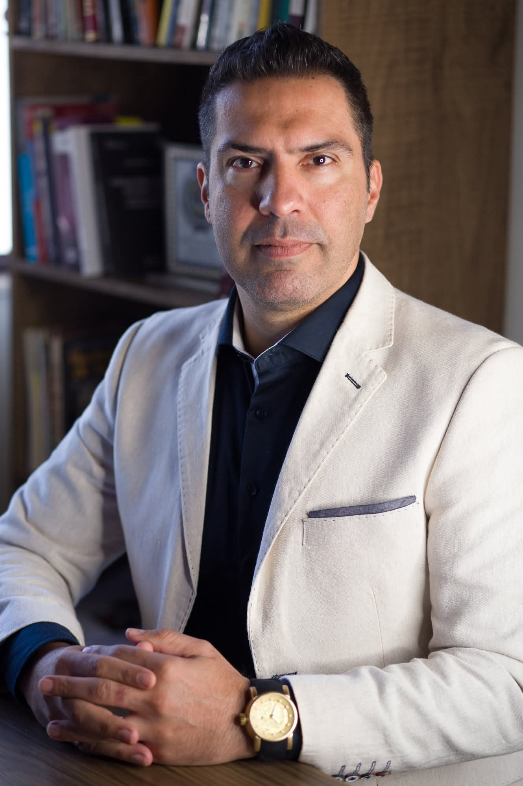
CRISTIAN FRANÇACom 26 anos de experiência, Cristian França une gestão empresarial, desenvolvimento de pessoas e formação de líderes. Sua trajetória acadêmica reúne três formações universitárias e seis pós-graduações.
Formação em PNL e coaching executivo, MBA em Gestão Empresarial e especialização em Neurociência e Psicologia. Conhecimento aplicado à comunicação, às metas, à organização de processos e ao desenvolvimento de talentos.
@cristian.franca01 Fale com CristianEspecialista em pessoas e RH, bacharel em Direito e Master Coach Trainer em Programação Neurolinguística. Atua com conselhoria, palestras, treinamentos e mentoring executivo.
Sua apresentação profissional reúne atuação no Brasil e no Paraguai, desenvolvimento de líderes, treinamento de sucessores e organização empresarial.
@kellyfranca.oficial Fale com KellyPor trás de cada orientação, pessoas reais e experiências compartilhadas. Conheça mais do trabalho de Cristian e Kelly em seus perfis.
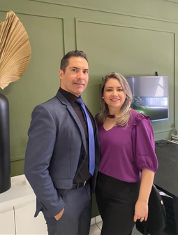
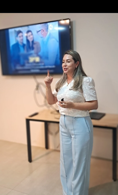
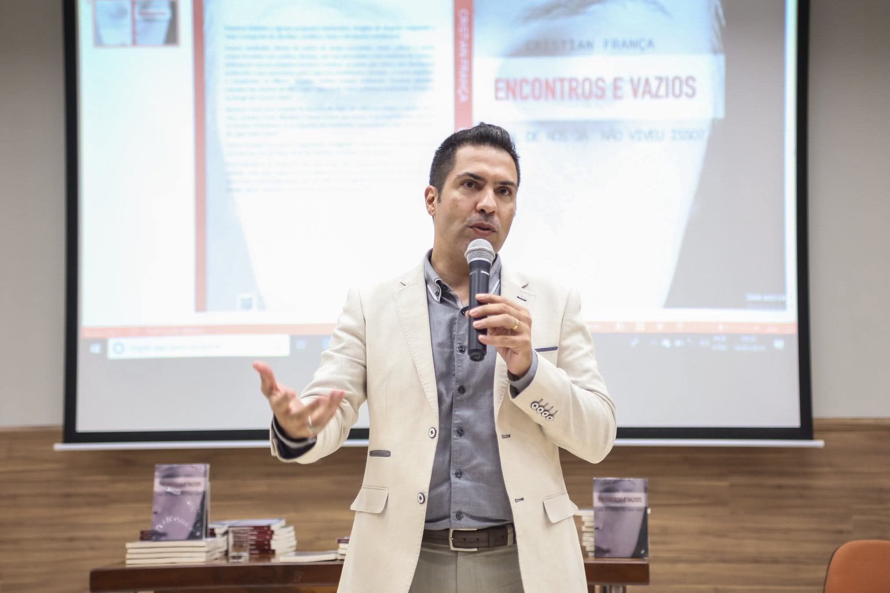
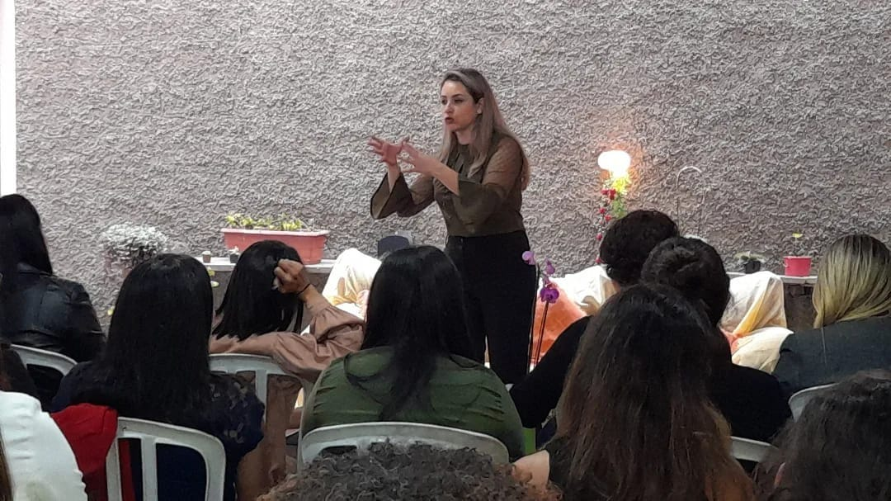
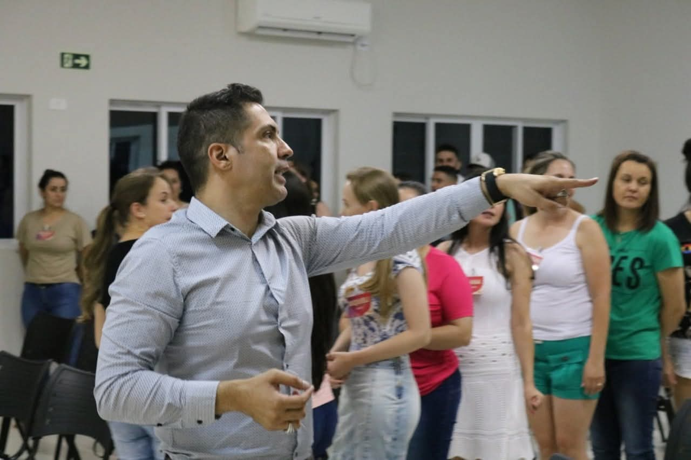
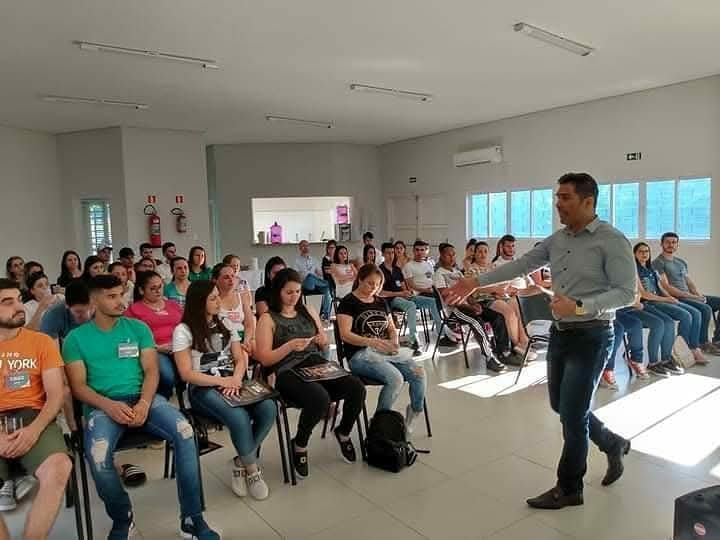
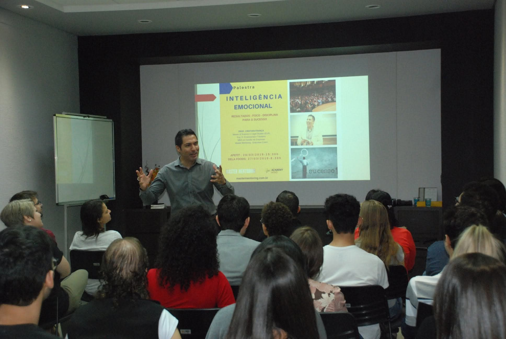
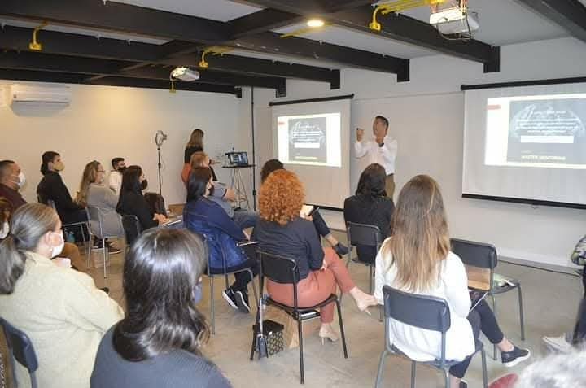
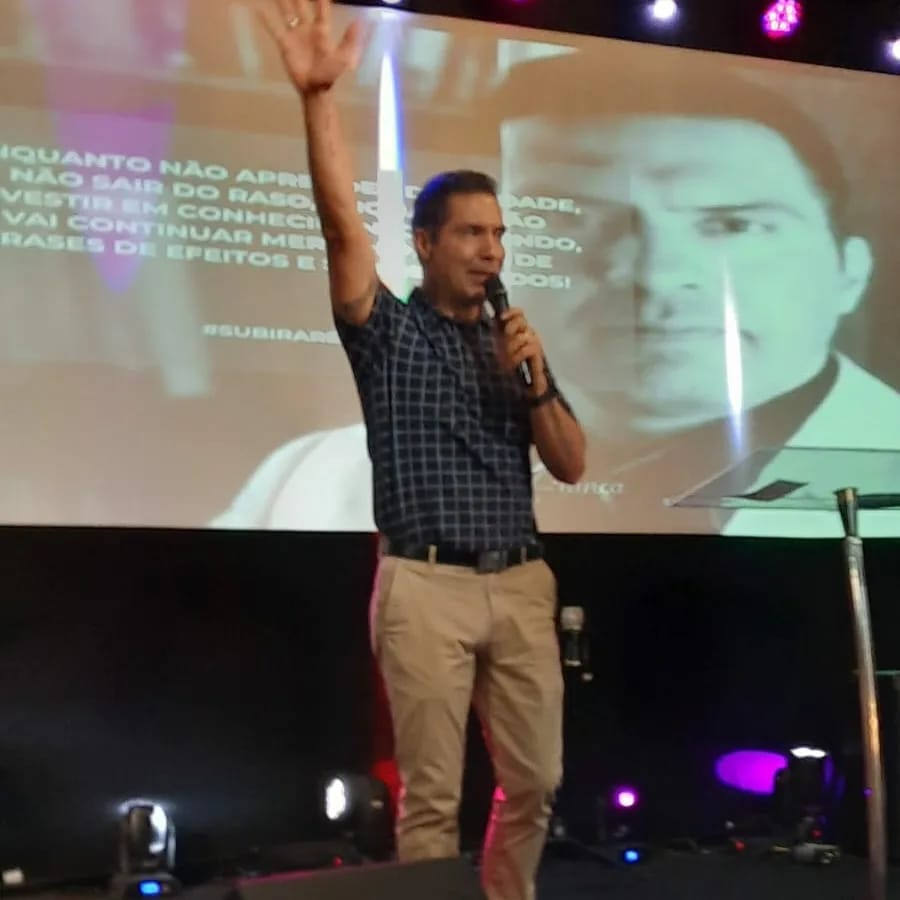
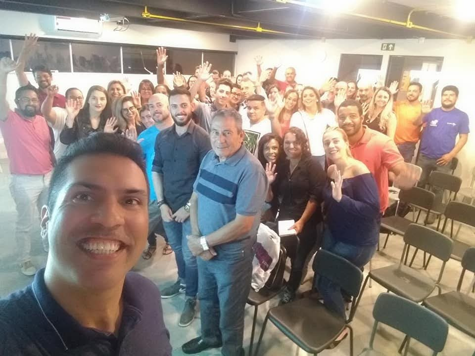
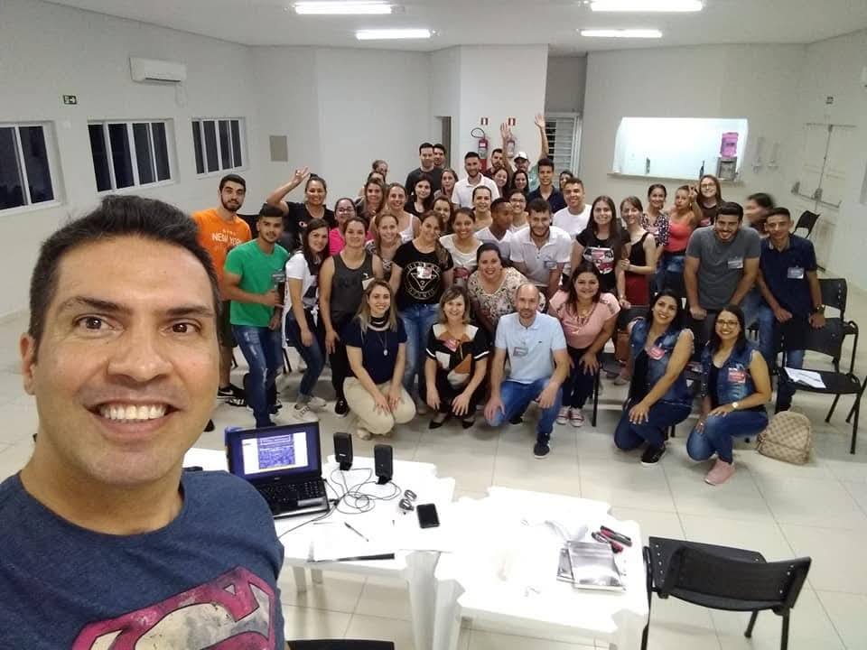
Pessoas, talentos corporativos, organização, processos e fluxogramas estão entre os temas destacados no perfil profissional de Cristian.
Acompanhe Cristian no Instagram ↗Kelly compartilha sua atuação em conselhoria empresarial e capacitação. Seus registros incluem treinamentos no Paraguai e desenvolvimento de equipes.
Veja um treinamento de Kelly ↗A trajetória de Cristian França também passa pela escrita. Livros que levam suas reflexões para além dos encontros presenciais.
CRISTIAN FRANÇA
“Qual de nós já não viveu isso?”
CRISTIAN RODRIGUES FRANÇA
Uma obra sobre negociação no mundo dos negócios e no mundo jurídico.
Para empresários, gestores, líderes e equipes que buscam organizar a empresa, desenvolver pessoas e melhorar a execução. A conversa inicial ajuda a entender o momento de cada negócio.
Gestão, processos e rotinas, liderança, vendas, metas, experiência do cliente, comunicação e capacitação. Kelly também atua com mentoring executivo e treinamento de sucessores.
Escolha Cristian ou Kelly nos botões de WhatsApp e conte um pouco sobre sua empresa e seu principal desafio. O contato é direto com o número indicado para cada conselheiro.
Converse diretamente com os conselheiros para alinhar necessidades, escopo, disponibilidade e condições. Cada um desses pontos deve ser combinado antes do início do trabalho.
A PRÓXIMA TRANSFORMAÇÃO COMEÇA AQUI
Vamos conversar sobre ele? Conte-nos seu momento, os desafios da sua equipe e o que você quer construir.
CONTATO DIRETO · UMA CONVERSA DE PESSOAS PARA PESSOAS